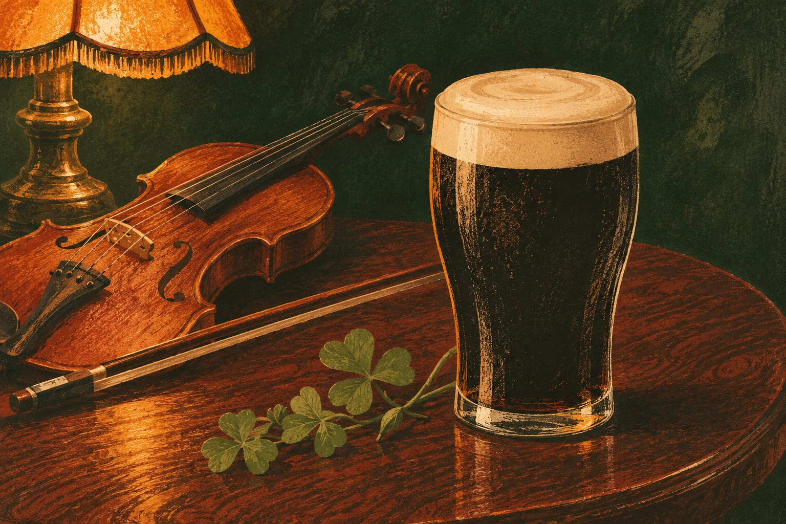

A BAR & RESTAURANT IN KINSALE
FOOD.
DRINK.
MUSIC.
Lunch and dinner served daily, with regular live Irish music.
View demo menu
01 / FOOD
LUNCH &
DINNER.
Irish bar food and daily specials. Let the team know about any dietary requirements or allergies.
Food served12 noon – 9pm
View demo menu →02 / MUSIC
LIVE IRISH
MUSIC.
Music every night from March to November, with fewer sessions over winter.
Music updates on Facebook →Great place for live traditional music. You can always find live music and a cold pint.